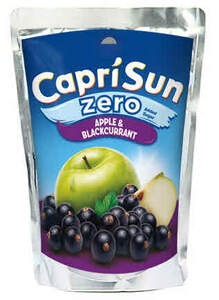
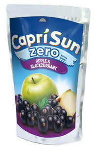
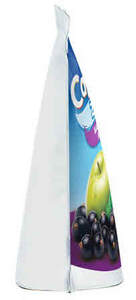
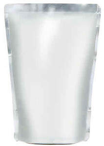
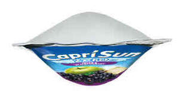

Trade Mark Journal No.2025/045 7 November 2025
UK00004284443 27 October 2025 (9,32)





3 Dimensional
- Class 9
- Downloadable virtual goods, namely computer programs with non-alcoholic beverages, non-alcoholic carbonated beverages, mineral water [beverages], flavored waters, water-based beverages containing tea extracts, functional water-based beverages, isotonic drinks, oat-based beverages [not being milk substitutes], fruit drinks, fruit juice beverages, juices, fruit juices, fruit syrups, non-alcoholic fruit nectars, non-alcoholic vegetable juice drinks, vegetable juices [beverages], smoothies, sorbets (beverages), part frozen slush drinks, syrups for beverages, syrups and other non-alcoholic preparations for making non-alcoholic beverages, essences for making non-alcoholic beverages, edible ices, non-medicated confectionery products, footwear, clothing, headwear, bags, digital animated and non-animated designs, characters and avatars for use online and in online virtual worlds; downloadable software, namely virtual goods for use online and in online virtual worlds; downloadable software, namely digital collectibles and digital clothing; downloadable software, namely digital collectibles and downloadable virtual goods; computer programs for the creation and trading of digital collectibles using blockchain-based software technology; digital collectibles represented by non-fungible cryptographic tokens over a blockchain or distributed ledger network; downloadable digital files authenticated by non-fungible tokens [NFTs]; 3D animation software; software for the visualisation of products; software, in particular panoramic tours in 3D for the presentation of products on the internet, by means of a virtual tour that can be interactively controlled by the user on a platform on the internet; computer software for editing 3D contents; software with avatars, designs and content elements that can be displayed or integrated into virtual representations; graphic interfaces (GUI) with avatars, designs and content elements that can be displayed or integrated into virtual representations; software that enables the authentication, ownership, availability and trading of digital assets and creations on computer software platforms; downloadable software for processing transactions related to crypto-collectibles, non-fungible tokens and other application tokens; downloadable computer software for interactive games for use via a global computer network and via various wireless networks and electronic devices; downloadable software for participating in social networks and interacting with online communities; downloadable software for accessing and streaming multimedia entertainment contents; downloadable software for access to a virtual online environment.
- Class 32
- Non-alcoholic beverages; Soft drinks; Non-alcoholic carbonated beverages; Mineral water [beverages]; Flavored waters; Water-based beverages containing tea extracts; Functional water-based beverages; Isotonic drinks; Lemonades; Oat-based beverages [not being milk substitutes]; Fruit drinks; Fruit juice beverages; Juices; Fruit juices; Fruit syrups; Non-alcoholic fruit nectars; Non-alcoholic vegetable juice drinks; Vegetable juices [beverages]; Smoothies; Sorbets (beverages); Part frozen slush drinks; Syrups for beverages; Syrups and other non-alcoholic preparations for making non-alcoholic beverages; Dilutable preparations for making beverages; Essences for making non-alcoholic beverages.
Capri Sun AG
Representative: Stobbs